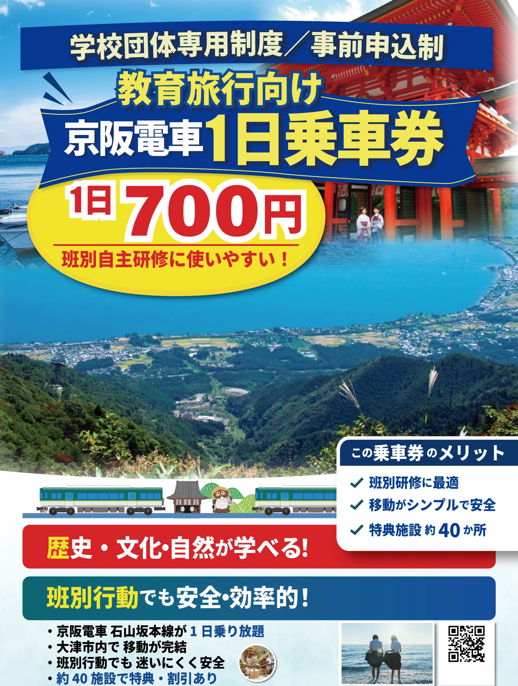
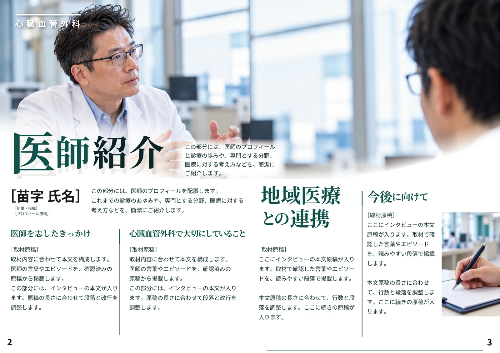
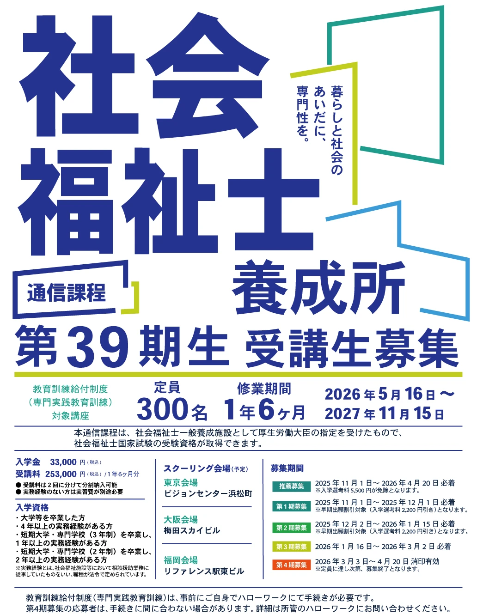
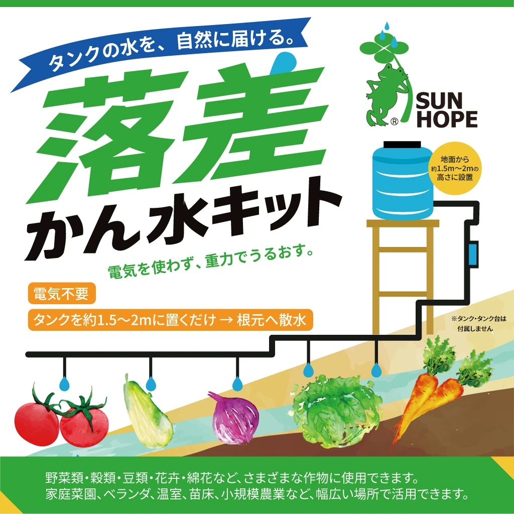
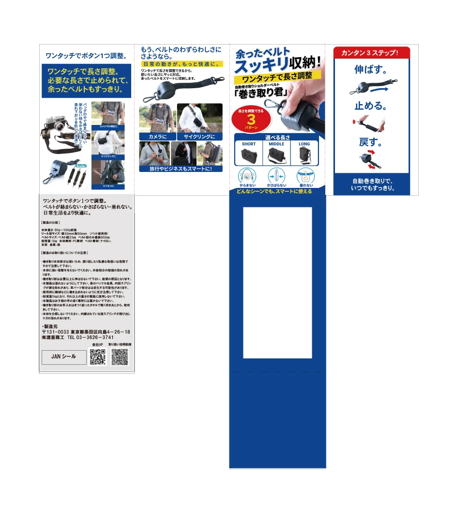
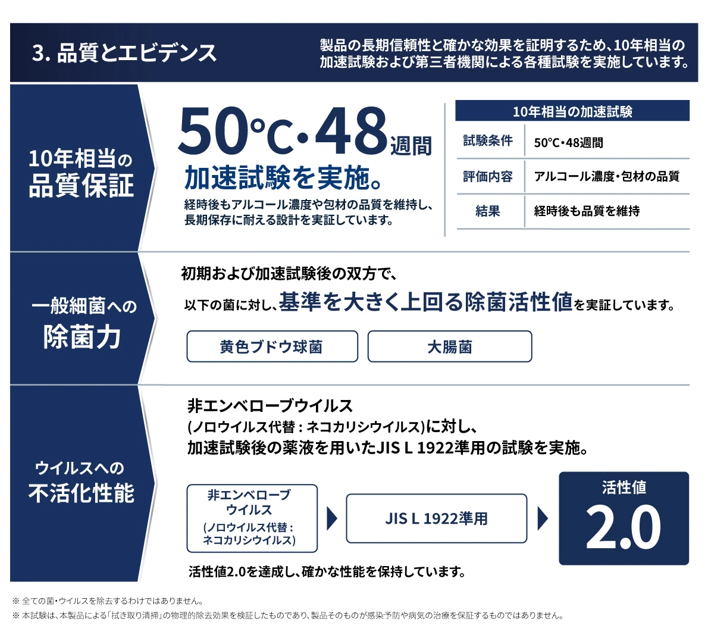
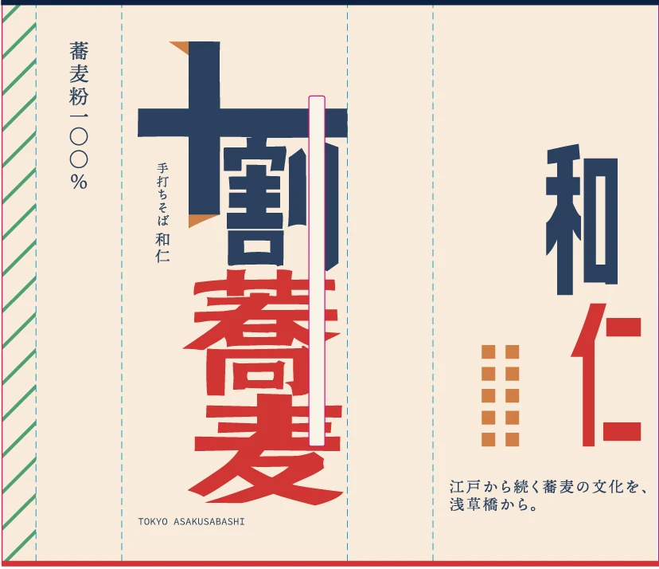
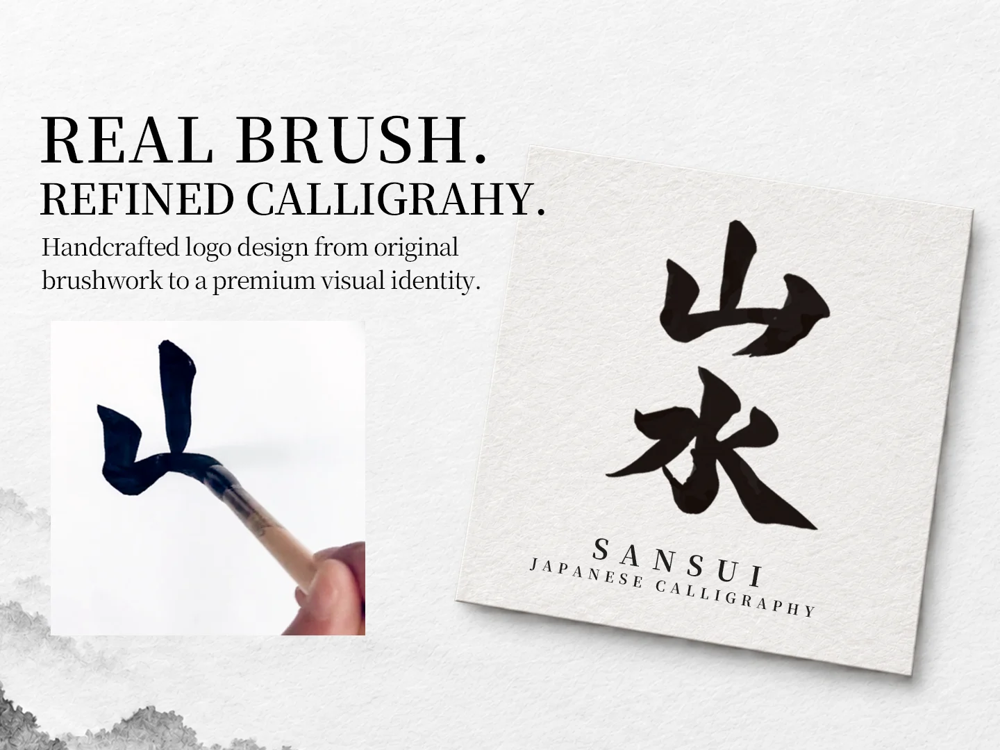

教育旅行向け 観光チラシ
教育旅行向けの案内チラシです。料金や利用メリット、観光の見どころが伝わるよう、情報の順番と見出しを整理しました。
観光案内チラシ / 表面抜粋デザイナー / akirlan
チラシ・リーフレット・パッケージ・ロゴを制作しています。
お話を伺い、内容の整理からデザインまでお手伝いします。


制作紹介
チラシ、リーフレット、パッケージ、ロゴ。
使う媒体に合わせた制作物をご覧いただけます。
これまでに制作した紙面デザインやパッケージ、ロゴをご紹介します。
8件の制作物を表示
教育旅行向けの案内チラシです。料金や利用メリット、観光の見どころが伝わるよう、情報の順番と見出しを整理しました。
観光案内チラシ / 表面抜粋
募集でまず伝えたい内容が目に入るよう、文字の大きさと配色を工夫しました。
募集ポスター / 表面抜粋
商品の用途や仕組みが伝わるよう、見出し・図・配色を組み合わせました。
パッケージ正面 / 採用作品
商品の特長と使い方を、写真・図・見出しで伝えるパッケージを制作しました。正面・側面・説明面を含む、提案時の展開図を掲載しています。
採用作品 / パッケージデザイン提案・展開図全体見出し・本文・余白に強弱をつけ、読み進めやすい見開きを考えました。
医療広報誌 / 見開きレイアウト
商品特長・品質情報・仕様を、A4両面のリーフレットに整理した提案です。ここでは裏面の文字と図表を掲載しています。
A4両面リーフレット / 裏面の文字・図表
商品名の文字組みと色面のバランスを考えた、外スリーブのデザイン提案です。
外スリーブ展開図 / 抜粋
筆文字を使ったロゴのデザインスタディです。文字の形と余白、ロゴとしての見せ方を検討しました。
筆文字ロゴ / 自主制作クライアントワーク
お預かりしたロゴに合わせて、
動きとタイミングを設計した仕事です。
支給いただいたロゴの形を活かし、筆の質感が伝わるように動きをつけました。
ロゴの形が少しずつ組み上がるように動きをつけました。手仕事の雰囲気を保てるよう、演出を抑えて仕上げています。
akirlan / Lancers
採用作品やデザイン提案を、
ランサーズの掲載ページでもご覧いただけます。
商品の用途と使い方が伝わるよう、紙面を組み立てたパッケージです。
写真・図・見出しで、使い方と特長をまとめたパッケージです。
教育旅行向けに、料金や観光の見どころを整理したチラシです。
体験会の募集を想定したチラシです。参加情報の読みやすさを考えて制作しました。
A4両面で、商品特長・品質情報・仕様をまとめました。
医療広報誌の見開きレイアウト案です。
抱き起こしシートのデザイン提案を掲載しています。
制作範囲
必要な制作物からご相談いただけます。
点数、使用先、素材の状況に合わせて範囲を決めます。
読み手と目的に合わせて情報を整理。募集・告知・販促物を制作します。
商品やサービスの内容を、見出し・図・本文の流れで伝えます。
商品の特長と見せ方を考え、展開図や印刷仕様を確認して仕上げます。
文字・シンボルのデザインと、既存ロゴを生かすアニメーション。
費用・納期・修正範囲・納品形式は着手前に確認します。掲載画像の製品情報・募集内容は制作時点のものです。
進め方
目的と制作条件を、言葉で確かめながら。
届けたい相手、必要な制作物、ご希望の時期を教えてください。
素材、点数、サイズ、修正範囲と納品形式を着手前に共有します。
デザインの意図をお伝えし、フィードバックをもとに調整します。
印刷用データやWeb用画像など、合意した形式で整理してお渡しします。
制作スタディ
ロゴや動きの表現を試した、自主制作のスタディです。